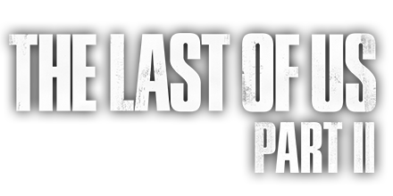
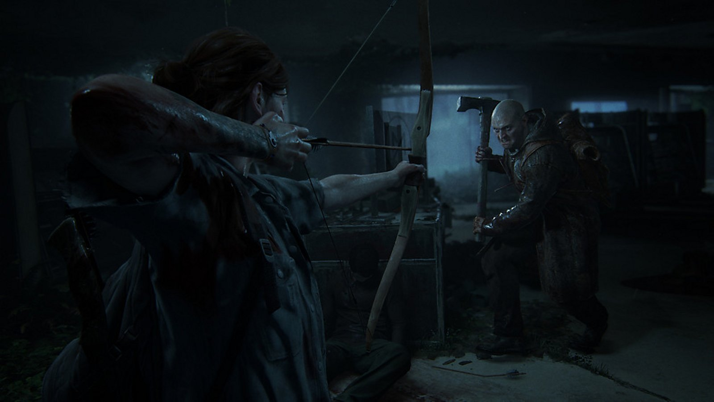
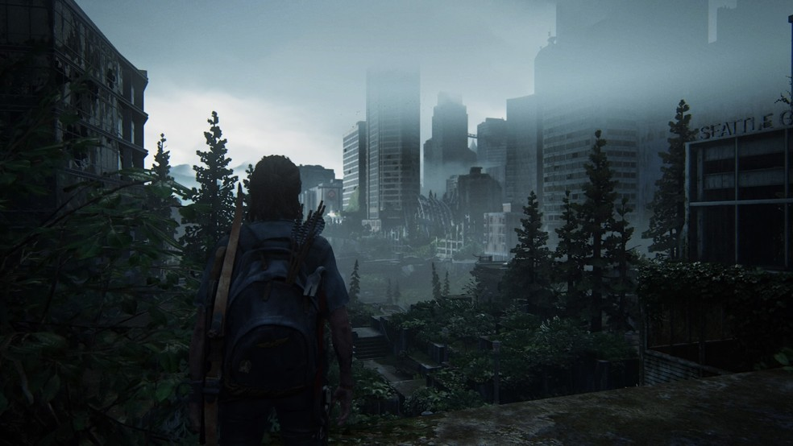

Vivencie os conflitos morais cada vez maiores criados pela caçada implacável de Ellie em busca de vingança. O ciclo de violência deixado no caminho dela desafiará as suas noções de certo ou errado, bem ou mal e herói ou vilão.

Com sistemas novos e aprimorados, a jornada de Ellie nesse mundo hostil é questão de vida ou morte. Sinta-a lutar desesperadamente pela sobrevivência com funcionalidades melhoradas, como combate corpo a corpo de alta intensidade, movimento fluido e furtividade dinâmica. A ampla variedade de armas, itens para fabricação, habilidades e melhorias permite personalizar as capacidades da Ellie conforme o seu estilo de jogo.

Acompanhe Ellie na jornada pelas montanhas e florestas pacíficas de Jackson até uma exuberante Seattle em ruínas, coberta de mato. Encontre novos grupos de sobreviventes, ambientes estranhos e traiçoeiros e infectados com evoluções terríveis. Ganhando vida com a versão mais recente do motor gráfico da Naughty Dog, o mundo e os personagens letais estão mais realistas e detalhados do que nunca.